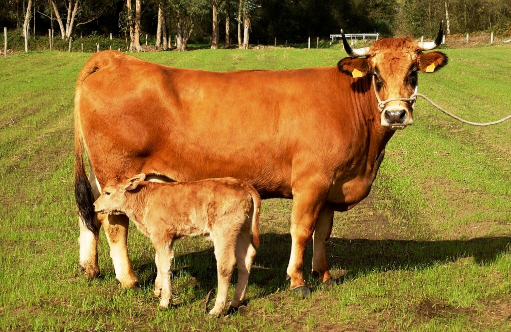

Tenemos una amplia selección de animales, los cuales pueden ser visitados determinados días (miércoles y viernes). A continuación podreís ver fotos e información acerca de nuestro ganado.
Nuestras Vacas
Tenemos dos tipos de ganado vacuno. Las de raza Holstein y las de raza Asturiana de los valles. A continuación os dejaremos sus respectivas fotos:
Holstein

Asturiana de los Valles
Nuestros cerdos
Tenemos dos tipos de ganado porcino. Los Gochos Asturceltas y los de raza Ibérica. A continuación os dejaremos sus respectivas fotos:
Nuestras gallinas
Tenemos dos tipos de ganado avícola. Las Leghorn y las Pintas asturianas. A continuación os dejaremos sus respectivas fotos:
Nuestras ovejas
Tenemos dos tipos de ganado ovino. Las ovejas Merinas y las Xaldas. A continuación os dejaremos una breve descripción de cada una y sus respectivas fotos: